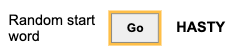
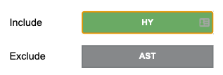
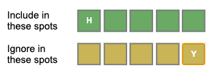
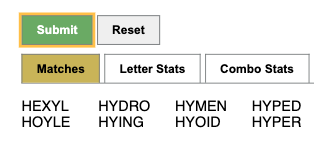

This tool helps narrow the possible words you can choose for Wordle. To start Wordle,
you need a word to start with. The
Random start word
section helps give you a start word with non-repeating letters.

If you want to exclude previous answers, selecting
Exclude previous answers
will filter answers from the random word generation as well as the matches from
submitting the form.
Once you know the results of your first guess, you can input the letters you know are
correct into the include section. Letters you don't want should be added to the exclude
section.

If you know correct letters, and you know the right spot they should be in, add the
letter to the correct spot in the
Include in these spots
section. If you know correct letters, and know the incorrect spots they are in, simply
add the letters to the
Ignore in these spots
section. Once you are done, click submit.

All matches will be shown after clicking
Submit
. Statistics for the matches are provided in separate tabs. The
reset
button can be used when starting a new game.

Statistics include the frequency of all letters and the frequency of each pair of
letters in the word list. The frequency of all the letters and the pairs of letters are
used as weights to generate a score for each match. Matches are sorted by score in the
statistics tab.